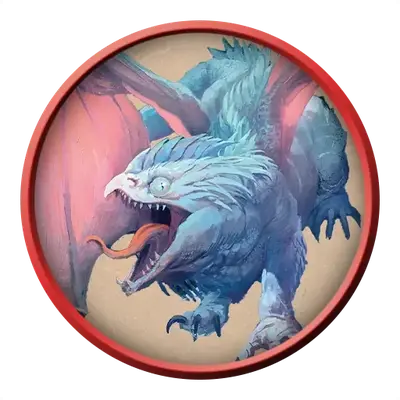

Молодой белый дракон
Young White Dragon
Большой Дракон (Цветной), Хаотичный Злой

Класс Защиты 17 Инициатива +3 (13)
Хиты 123 (13к10 + 52)
Скорость 40 футов, Плавания 40 футов, Полёта 80 футов, Копания 20 футов
| мод | спас | ||
|---|---|---|---|
| СИЛ | 18 | +4 | +4 |
| ЛОВ | 10 | +0 | +3 |
| ТЕЛ | 18 | +4 | +4 |
| мод | спас | ||
|---|---|---|---|
| ИНТ | 6 | −2 | +2 |
| МДР | 11 | +0 | +3 |
| ХАР | 12 | +1 | +1 |
Иммунитеты Холод
Чувства Тёмное зрение 120 футов, пассивное Восприятие 16, Слепое зрение 30 футов
Языки Общий, Драконий
Опасность 6 (2 300 опыта; БВ +3)
Особенности
Хождение по льду. Дракон может перемещаться по ледяным поверхностям и лазать по ним, не совершая проверки характеристики. Кроме того, Труднопроходимая местность, состоящая из льда или снега, не стоит ему дополнительных футов.
Действия
Мультиатака. Дракон совершает три атаки Раздиранием.
Раздирание. Бросок рукопашной атаки: +7, досягаемость 10 фт. Попадание: 9 (2к4 + 4) Рубящего урона плюс 2 (1к4) урона Холодом.
Холодное дыхание (Перезарядка 5–6). Спасбросок Телосложения: Сл 15, каждое существо в 30-футовом Конусе. Провал: 40 (9к8) урона Холодом. Успех: Только половина урона.
Бонус мастерства +3
Белые драконы
Белые драконы — одни из самых древних представителей цветных драконов, для которых главными приоритетом является выживание. Они обитают среди суровых и беспощадных арктических просторов, ледяных хребтов и замёрзших морей, где жизнь постоянно висит на волоске.
Белые драконы ревностно стерегут свои владения, прочёсывая замёрзшие земли в поисках пищи и следов чужаков. Большинство из них не интересуется интригами смертных или других драконов — они озабочены лишь собственным выживанием.
Белые драконы создают надёжные логова, чтобы защититься от смертоносных арктических существ и суровых погодных условий. В своих ледяных чертогах белые драконы хранят свидетельства своего превосходства: черепа чудовищ, снаряжение павших врагов и диковинки, которые вызвали их интерес. Чтобы защитить своё добро, они либо покрывают его слоем льда, либо прячут на дне замёрзших водоёмов. Для белых драконов каждое сокровище — трофей, напоминание о победе, которая со временем обрастает героическими подробностями.
Молодые белые драконы яростно защищают свои охотничьи угодья от соперников. Иногда кобольды или группы Гуманоидов приносят им пищу и дары, надеясь, что сытые драконы не будут нападать на их поселения.